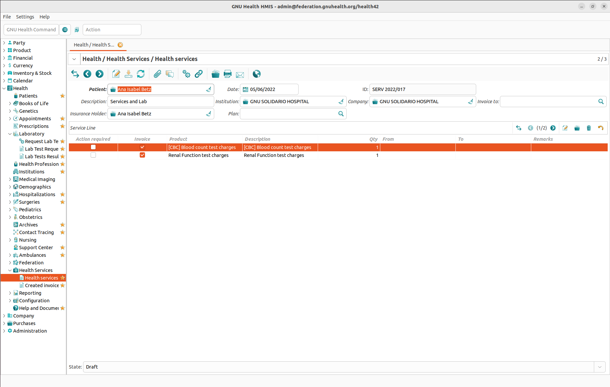
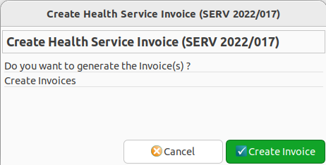
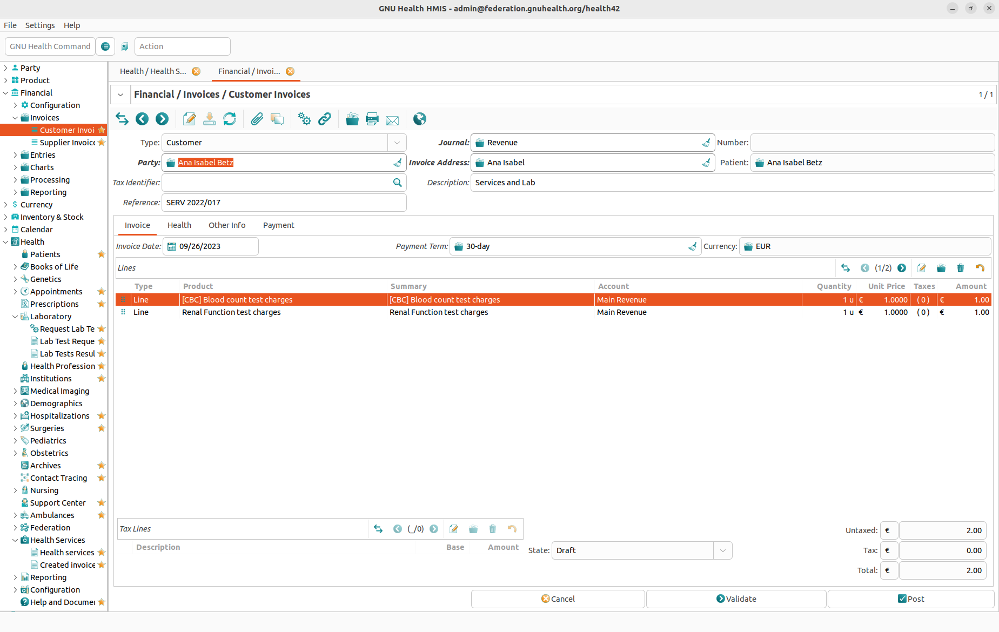
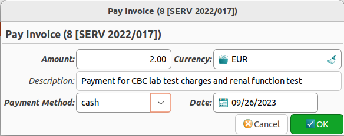

Products and Services Management
Products
Products basics
Similar to a party, a product is a basic data concept in Tryton. Whenever you need a certain product in GNU Health, this product needs to be created and configured in the Product module.
There are three different types of products:
Assets
Goods
Services
The type will determine the tabs and fields available in the Products form.
Each product can be assigned to one category and can have one or more variants.
Products are the basic entity for creating invoices. Therefore every product needs a list price, a cost price and a ‘’unit of measure (UOM)’’ for calculating costs.
Variants basics
In the lower half of the Products form there are checkboxes to specify the product type in the context of the Health section:
Medicament
Medical Supply
Vaccine
Bed
Insurance Plan
Creating new medication products
IMPORTANT: GNU Health medicament products must always be created in the main “Tryton” product section before they can be imported into the GNU Health medicaments.
Each product can be added individually or a range of products can be loaded via a CSV file.
The product must be described and costed as individual dose units that are dispensed / administered to patients in the following format DRUG | STRENGTH | FORM e.g. Amoxicillin 500mg capsules (UOM = capsule), Amoxicillin 125mg/5mL oral liquid (UOM = mL), Benzylpenicillin 600mg vials (UOM = vial)
A range of new “Default UOM” values will need to be created for medication dose units – tablet, capsule, mL, vial etc
Always tick the “Consumable”, “Medicament” and the “Purchasable” boxes.
When the “Purchasable” box is ticked a new tab will open allowing the setting up of “Suppliers” for a particular product. Set up any number of suppliers to attach to the product.
Add a “Category” as “Medicaments” or “Medicaments / WHO essential medicines”.
After this initial set up it is now possible to create/import the medicament product into the configuration section of the GNU Health module - Health/Configuration/Medicaments
Type in a few letters of the product to be imported from the main “Tryton” product section.
For liquid medicines (or solid medicines) there is now an option to enter the STRENGTH of the product e.g. 125 mg in 5 mL, 500 mg in 1 capsule etc. This functionality is designed for future use of more complex prescribing scenarios.
Add the pharmacological category – in this case “Antibacterials”.
And set the Pregnancy Warning setting for that particular medication. This setting will trigger a message when prescribing for female patients between the age of xx years and yy years.
Add the “Active component” of the medication. This should be entered by referring to the WHO essential medicines list.
Categories
Categories are used to group similar products. You can create, edit, or delete categories in the Product → Categories section.
Typical categories in GNU Health could be:
Imaging Services
Insurances
Lab Services
Medicaments
To see all products of a certain category, open the Categories list view, then double click the category you are interested in.
Invoicing Patients
Step 1: Listing Health Services to be Invoiced
To invoice a patient for hospitalizations, examinations, treatments, medicaments, expendable items etc. you need to create a new record in the Health → Health Services → Health Services section.
Caution
THIS MUST BE DONE BEFORE ANY SERVICES ARE CHARGED TO THE PATIENT’S ACCOUNT.


A Health Services record consists of the following data:
Patient
Date
ID (set automatically)
Description (e.g. “Medical evaluation and prescription”)
Invoice to: The recipient of the invoice (which is not necessarily identical with the patient). Since this is a link to a Party record you can not only bill patients or persons but institutions as well.
In the Service Line section you add the products and services to be charged. Each service line consist of the following fields:
Invoice
Product
Description
Qty: The quantity.
From
To
Step 2: Creating the Invoice


When the Health Services record is complete, click on the Action button in the toolbar and choose the Create Health Service Invoice command. A dialog box will appear asking you whether you want to create an Invoice based on the information you have entered in the Health Services record. Click the Create Invoice button.


Things that may go wrong at this point:
If you get the error message “No Payment Term associated to the Patient”: Go to Party → Parties → People, open the record of the patient you are about to bill, switch to the Accounting tab and fill in the Customer Payment Term field. Make sure to save the record before going back to Health → Health Services → Health Services and trying to create the invoice again.
If you get an error message similar to “There is no account expense/revenue defined on the product paracetamol (30)”: Go to Product → Products, open the record of the product mentioned in the error message, switch to the Accounting tab and fill in both the Account Revenue and the Account Expense field. Make sure to save the record before going back to Health → Health Services → Health Services and trying to create the invoice again.
After you have successfully created the invoice, the Health Services record changes its state from Draft to Invoiced. However, the process is not complete at this point (and you could still revert the Health Services record to its Draft state by clicking the Set to Draft button if necessary).
For the final steps you must switch to the Financial → Invoices → Invoices section. There you will find your new invoice, still in Draft state. Open the invoice, complete it as necessary, then validate it.
An invoice can have one of the following states:
Draft: The initial state.
Validated: An invoice that has been validated can not be edited anymore. However, you could change the state of the invoice to Draft or Cancelled by clicking the appropriate buttons.
Cancelled: An invoice that has been cancelled can not be edited either. However, you could change the state of the invoice to Draft again which will allow editing.
Paid: Clicking the Post button will bring an invoice to the Paid stage. The invoice can not be edited anymore, and you can’t change its state neither.
Invoice payment


At the moment the invoice is posted, a new invoice ID is created, and it can be paid at that moment.
Payment Method: You need to specify a payment method. The payment method is created in Financial -> Configuration -> Journals -> Invoice Payment methods.
Note
Make sure you use the right debit and credit accounts when creating the Invoice payment method Journal, otherwise you will not see the payment method in the selection